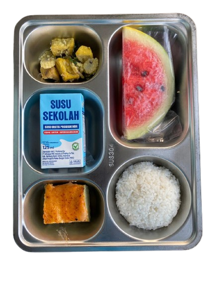
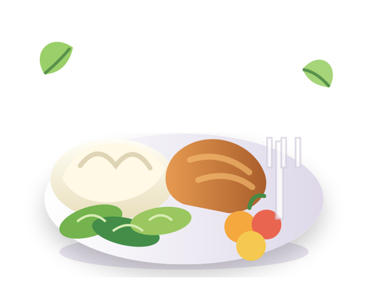

4 Komponen
Dalam satu porsi
Digital Nutrition Menu
SPPG CIBADAK110
Menu Makan Bergizi Gratis
Informasi menu, komposisi, dan kandungan gizi makanan yang disediakan untuk mendukung kebutuhan energi dan kesehatan harian masyarakat.

Energi + Gizi
22 g
Protein
8 g
Serat
450 kcal
Energi harian

Informasi Gizi
Satu porsi, lengkap dan seimbang
Nilai di bawah merupakan contoh informasi nutrisi yang dapat disesuaikan berdasarkan data menu aktual SPPG CIBADAK110.
Komposisi Menu
Komponen utama yang mendukung kesehatan
Scan untuk Informasi
Kenali menu dengan satu scan
Hanya dengan pemindaian kode QR, masyarakat dapat melihat menu harian, komposisi, hingga kandungan gizi SPPG CIBADAK110.
SPPG CIBADAK110
Menu Makan Bergizi Gratis